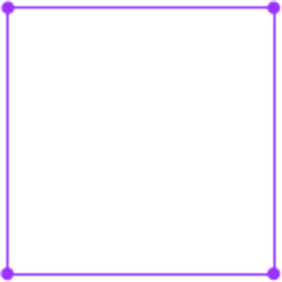

hyper -
gud
Hi, My name is Gud.
I’m studying Design and Programming.
And I am interested in New Media & Interaction.
I like fun things and enjoy learning,
My Moto is ‘hyper-’.
Hyper-’s target is me, I will keep develop myself !

안녕하세요! 거드입니다.
디자인과 프로그래밍을 공부하고 있습니다.
뉴미디어와 인터랙션에 관심이 많습니다.
유쾌하고 배우는 것을 좋아하는
저의 모토는 hyper- ,
자신을 ‘넘어서’ 끊임없이 개발해 나가는 것입니다.
